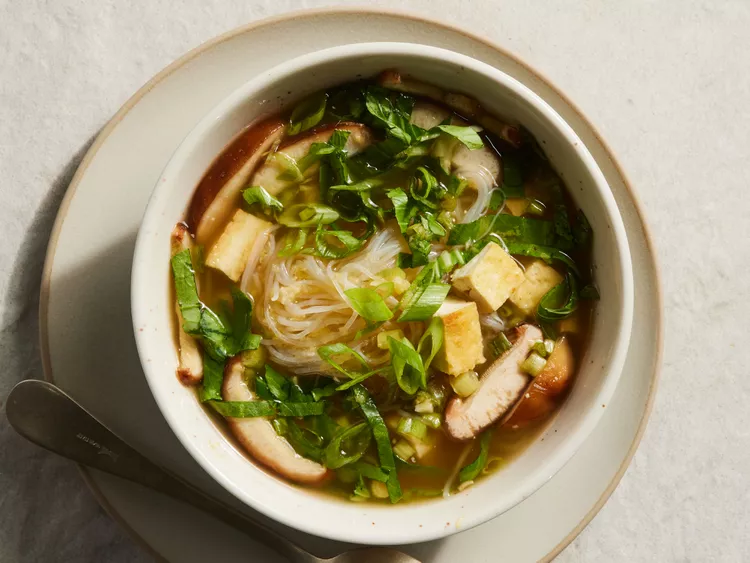

Miso Noodle Soup in a Jar

Description
Our version of miso noodle soup in a jar was inspired by recipes on TikTok for miso soup in a jar. Try this heat-and-eat recipe for a warming main to
prep and tote all season long. Use jars labeled “microwave-safe” (check the bottoms) and never microwave the lids.
Ingredients
- 12 ounces extra-firm tofu
- 1 tablespoon vegetable oil
- 1/4 cup sliced green onions
- 3 tablespoons white miso paste
- 2 cloves garlic, minced
- 1 tablespoon vegetable stock base
- 1 tablespoon grated fresh ginger
- 1 1/2 cups cooked rice vermicelli noodles
- 1 cup thinly sliced shiitake mushrooms
- 1 cup thinly sliced baby bok choy
Steps
- Cut tofu into 1/2-inch planks. Heat oil in a large skillet over medium-high heat.
Cook tofu, turning halfway through, until golden, 6 to 8 minutes. Cut tofu into cubes.
- Stir together green onions, miso paste, garlic, stock base, and ginger in a small bowl.
Divide evenly among 3 microwave-safe pint-size canning jars with lids.
- Layer evenly with rice vermicelli noodles, tofu, mushrooms, and bok choy. Chill, covered, up to 5 days.
To serve, see “Heat and Eat”. Garnish with sliced green onions.